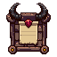
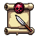

<meta charset="utf-8">
<title>의뢰(퀘스트) 설계</title>
<link rel="stylesheet" href="https://fonts.googleapis.com/css2?family=Do+Hyeon&family=IBM+Plex+Sans+KR:wght@400;600&display=swap">
<style>
/* 레이아웃: 화면 배치 2안(홈 모형) → 아이콘 → 의뢰 내용 표 → 보상 고르기. 게임과 같은 밤 색 한 테마 */
:root {
  color-scheme: dark;
  --page: #120c18; --ink: #ece4f2; --muted: #a99bb5; --line: #2f2439; --card: #1d1526;
  --gold: #ffcf4d; --ruby: #ff4a5e; --hp: #3cf07a; --panel: rgb(81, 20, 35); --bone: #efe3c8;
  --game: 'Do Hyeon', 'Malgun Gothic', sans-serif;
  --body: 'IBM Plex Sans KR', system-ui, sans-serif;
}
body { background: var(--page); color: var(--ink); font: 15px/1.65 var(--body); }
main { max-width: 980px; margin: 0 auto; padding-block: 28px 64px; padding-inline: 16px; display: grid; gap: 36px; }
h1, h2, h3 { font-family: var(--game); font-weight: 400; margin: 0; text-wrap: balance; }
h1 { font-size: 30px; } h2 { font-size: 22px; } h3 { font-size: 18px; }
.rec { font: 600 11px var(--body); color: #1c1206; background: var(--gold); padding: 2px 6px; border-radius: 4px; vertical-align: 2px; }
p { margin: 0; max-width: 65ch; }
.lede, .note { color: var(--muted); } .note { font-size: 13px; }
section { display: grid; gap: 14px; }
.opts { display: flex; flex-wrap: wrap; gap: 24px; align-items: flex-start; }
.opt { display: grid; gap: 8px; width: 320px; max-width: 100%; }
.opt p { font-size: 14px; }
.phone { position: relative; width: 320px; height: 548px; max-width: 100%; overflow: hidden; border: 2px solid var(--line); border-radius: 18px; background: #0c0716 url(home.jpg) center top / cover; font-family: var(--game); color: var(--bone); }
.cover { position: absolute; background: #160c22; }
.ib { position: absolute; width: 52px; display: grid; justify-items: center; font-size: 11px; line-height: 1.1; text-shadow: 0 1px 0 #000, 0 0 3px #000; }
.ib img { width: 40px; height: 40px; image-rendering: pixelated; }
.ib .badge { position: absolute; right: 2px; top: -4px; min-width: 16px; height: 16px; padding: 0 3px; border-radius: 8px; background: var(--ruby); border: 2px solid #000; color: #fff; font-size: 10px; display: grid; place-items: center; }
.banner { position: absolute; left: 34px; right: 34px; bottom: 98px; display: flex; align-items: center; gap: 6px; padding: 2px 4px; border: 8px solid transparent; border-image: url(pill.png) 8 fill / 8px stretch; image-rendering: pixelated; font-size: 13px; line-height: 1.2; }
.banner > img { width: 26px; height: 26px; image-rendering: pixelated; flex: none; }
.banner .txt { flex: 1; min-width: 0; display: grid; }
.banner .txt small { color: #c9ae9a; font-size: 11px; }
.banner .rw { display: flex; align-items: center; gap: 2px; color: var(--gold); flex: none; }
.banner .rw img { width: 16px; height: 16px; image-rendering: pixelated; }
.banner.done { animation: glow 1.4s ease-in-out infinite; }
.banner .go { flex: none; font-size: 12px; color: #1c1206; background: var(--gold); border: 2px solid #000; padding: 0 5px; }
@keyframes glow { 50% { filter: brightness(1.3) drop-shadow(0 0 6px #ffcf4d); } }
.dim { position: absolute; inset: 0; background: #07030acc; }
.modal { position: absolute; left: 10px; right: 10px; top: 50%; translate: 0 -50%; border: 12px solid transparent; border-image: url(frame_sq.png) 10 / 12px stretch; background: var(--panel); background-clip: padding-box; image-rendering: pixelated; padding: 0 6px 8px; display: grid; gap: 6px; }
.modal::before { content: ''; position: absolute; left: 50%; top: -38px; width: 140px; height: 42px; translate: -50% 0; background: url(crest.png) center / contain no-repeat; image-rendering: pixelated; }
.mhead { display: flex; justify-content: space-between; align-items: center; font-size: 18px; }
.mhead img { width: 24px; height: 24px; image-rendering: pixelated; }
.tabs2 { display: flex; gap: 4px; }
.tabs2 span { flex: 1; text-align: center; padding: 1px 0; border: 8px solid transparent; border-image: url(bar.png) 10 fill / 8px stretch; image-rendering: pixelated; font-size: 14px; filter: brightness(.7); }
.tabs2 span.on { filter: none; color: var(--gold); }
.q { display: flex; align-items: center; gap: 6px; padding: 2px 4px; border: 6px solid transparent; border-image: url(pill.png) 8 fill / 6px stretch; image-rendering: pixelated; font-size: 13px; line-height: 1.2; }
.q .txt { flex: 1; min-width: 0; display: grid; gap: 2px; }
.q .bar { height: 6px; background: #1a0810; border: 1px solid #05030a; position: relative; }
.q .bar i { position: absolute; inset: 0 auto 0 0; background: var(--gold); }
.q .rw { display: flex; align-items: center; gap: 2px; color: var(--gold); flex: none; font-size: 12px; }
.q .rw img { width: 14px; height: 14px; image-rendering: pixelated; }
.q .btn { flex: none; min-width: 38px; text-align: center; font-size: 12px; padding: 1px 4px; border: 2px solid #000; background: #3a1820; color: var(--bone); }
.q .btn.get { background: var(--gold); color: #1c1206; }
.q.got { opacity: .45; }
.allc { display: flex; justify-content: space-between; align-items: center; font-size: 13px; color: #c9ae9a; }
.allc b { color: var(--gold); font-weight: 400; }
.icons { display: flex; flex-wrap: wrap; gap: 16px; }
.icon { display: grid; justify-items: center; gap: 4px; width: 120px; text-align: center; font-size: 13px; }
.icon .box { background: #221b29; border: 1px solid var(--line); border-radius: 8px; padding: 8px; }
.icon img { width: 96px; height: 96px; image-rendering: pixelated; display: block; }
.icon small { color: var(--muted); }
.wrap { overflow-x: auto; border: 1px solid var(--line); border-radius: 6px; background: var(--card); }
table { border-collapse: collapse; width: 100%; min-width: 560px; font-variant-numeric: tabular-nums; font-size: 14px; }
th, td { text-align: left; padding: 7px 12px; border-bottom: 1px solid var(--line); vertical-align: top; }
th { font-size: 12px; color: var(--muted); font-weight: 600; }
tr:last-child td { border-bottom: 0; }
td.n { color: var(--muted); width: 32px; }
.decide { border: 1px solid var(--gold); border-radius: 6px; padding: 14px 16px; display: grid; gap: 8px; }
.decide h2 { color: var(--gold); font-size: 19px; }
ul { margin: 0; padding-left: 20px; display: grid; gap: 4px; }
.mphone { width: 300px; height: 650px; max-width: 100%; overflow: hidden; border: 2px solid var(--line); border-radius: 18px; position: relative; }
.mscreen { position: absolute; left: 0; top: 0; width: 375px; height: 812px; transform: scale(.8); transform-origin: 0 0; background: url(home_m.jpg) 0 0 / 375px 812px; font-family: var(--game); color: var(--bone); }
.qi { position: absolute; width: 54px; display: grid; justify-items: center; font-size: 13px; line-height: 1.1; text-shadow: 0 1px 0 #000, 0 0 3px #000; }
.qi img { width: 46px; height: 46px; image-rendering: pixelated; }
.qi .badge { position: absolute; right: 0; top: -4px; min-width: 18px; height: 18px; padding: 0 3px; border-radius: 9px; background: var(--ruby); border: 2px solid #000; color: #fff; font-size: 11px; display: grid; place-items: center; }
.mini { position: absolute; width: 70px; display: grid; justify-items: center; gap: 1px; padding: 3px 2px 4px; border: 6px solid transparent; border-image: url(pill.png) 8 fill / 6px stretch; image-rendering: pixelated; line-height: 1.1; text-align: center; box-sizing: border-box; }
.mini > img { width: 30px; height: 30px; image-rendering: pixelated; }
.mini small { font-size: 10px; color: #c9ae9a; }
.mini b { font-weight: 400; font-size: 12px; }
.mini .mbar { width: 100%; height: 5px; background: #1a0810; border: 1px solid #05030a; position: relative; }
.mini .mbar i { position: absolute; inset: 0 auto 0 0; background: var(--gold); }
.mini .mrw { display: flex; align-items: center; gap: 2px; font-size: 11px; color: var(--gold); }
.mini .mrw img { width: 13px; height: 13px; image-rendering: pixelated; }
.mini em { font-style: normal; color: #1c1206; background: var(--gold); padding: 0 3px; margin-left: 2px; }
.mini.done { animation: glow 1.4s ease-in-out infinite; }
</style>
<main>
  <header style="display:grid;gap:8px">
    <h1>의뢰(퀘스트) 설계</h1>
    <p class="lede">튜토리얼이 끝나면 할 일을 몰라 이탈하는 문제를 막습니다. 두 가지 의뢰를 만듭니다. <b>성장 의뢰</b>는 다음에 할 일을 하나씩 알려 주는 길잡이(끝이 없게 이어짐)이고, <b>일일 의뢰</b>는 매일 0시에 새로 생기는 할 일입니다. 의뢰를 누르면 그 일을 하는 곳으로 바로 가고, 다 하면 눌러서 보상을 받습니다. 진행도와 보상은 서버가 세고 지급합니다.</p>
  </header>

  <section>
    <h2>1. 위치 (작게)</h2>
    <p class="note">실제 홈 화면(폰 375×812)을 찍은 위에 올렸습니다. 띠를 작은 카드(폭 70px)로 줄였고, 탑·마왕·다른 버튼과 겹치지 않는 빈 곳만 골랐습니다. 다 하면 카드가 금빛으로 깜빡이며 "받기"가 뜹니다. 의뢰 아이콘(일일 의뢰)은 셋 다 왼쪽 줄 기록 아래입니다.</p>
    <div class="opts">
      <div class="opt">
        <h3>A. 출정 왼쪽 아래 <span class="rec">추천</span></h3>
        <div class="mphone"><div class="mscreen"><span class="qi" style="left:6px;top:306px"><span class="badge">2</span>의뢰</span><div class="mini" style="left:4px;top:628px"><small>다음 할 일</small><b>슬라임 Lv.5</b><span class="mbar"><i style="width:60%"></i></span><span class="mrw">10</span></div></div></div>
        <p>엄지가 가장 쉽게 닿는 아래쪽, 가장 많이 누르는 출정 버튼 바로 옆이라 출정할 때마다 눈에 들어옵니다. 탑 밑동 왼쪽 빈 언덕 자리라 아무것도 가리지 않습니다.</p>
      </div>
      <div class="opt">
        <h3>B. 왼쪽 줄 의뢰 아이콘 바로 밑</h3>
        <div class="mphone"><div class="mscreen"><span class="qi" style="left:6px;top:306px"><span class="badge">2</span>의뢰</span><div class="mini" style="left:4px;top:376px"><small>다음 할 일</small><b>슬라임 Lv.5</b><span class="mbar"><i style="width:60%"></i></span><span class="mrw">10</span></div></div></div>
        <p>의뢰 아이콘과 한 묶음이라 정돈돼 보입니다. 다만 화면 위쪽이라 폰에서는 손가락을 올려야 하고, 출정할 때 눈에 덜 띕니다.</p>
      </div>
      <div class="opt">
        <h3>C. 오른쪽 줄 상점 밑</h3>
        <div class="mphone"><div class="mscreen"><span class="qi" style="left:6px;top:306px"><span class="badge">2</span>의뢰</span><div class="mini done" style="left:301px;top:232px"><small>다음 할 일</small><b>슬라임 Lv.5</b><span class="mbar"><i style="width:100%"></i></span><span class="mrw">10 <em>받기</em></span></div></div></div>
        <p>오른쪽 줄(패스·방치 보상·상점)이 "받는 곳"이라 보상 받기와 잘 맞습니다. 위쪽이라 B와 같은 단점이 있습니다. (그림은 다 했을 때 모습)</p>
      </div>
      <div class="opt">
        <h3>의뢰 창 (A·B 공통, 가운데 창)</h3>
        <div class="phone"><div class="dim"></div>
          <div class="modal">
            <div class="mhead"><span>의뢰</span></div>
            <div class="tabs2"><span>성장</span><span class="on">일일</span></div>
            <div class="q got"><span class="txt">출정 3번<span class="bar"><i style="width:100%"></i></span></span><span class="rw">5</span><span class="btn">완료</span></div>
            <div class="q"><span class="txt">공략 1번 이기기<span class="bar"><i style="width:100%"></i></span></span><span class="rw">5</span><span class="btn get">받기</span></div>
            <div class="q"><span class="txt">강화 10번 (4/10)<span class="bar"><i style="width:40%"></i></span></span><span class="rw">5</span><span class="btn">가기</span></div>
            <div class="q"><span class="txt">방치 보상 받기 (0/1)<span class="bar"><i style="width:0"></i></span></span><span class="rw">5</span><span class="btn">가기</span></div>
            <div class="allc"><span>모두 하면</span><span><b>영혼석 +20</b></span></div>
          </div>
        </div>
        <p>"가기"는 그 일을 하는 곳으로, "받기"는 보상. 성장 탭은 지금 할 일 하나와 다음 할 일을 보여 줍니다.</p>
      </div>
    </div>
  </section>

  <section>
    <h2>2. 의뢰 아이콘</h2>
    <div class="icons">
      <div class="icon"><div class="box"></div>A. 뿔 달린 의뢰 게시판 <small>추천 · "의뢰"가 바로 읽힘</small></div>
      <div class="icon"><div class="box"></div>B. 해골 봉인 두루마리 <small>기록 아이콘(두루마리)과 비슷함</small></div>
    </div>
  </section>

  <section>
    <h2>3. 성장 의뢰 (한 번에 하나, 순서대로)</h2>
    <p class="note">지금 상태로 이미 된 의뢰는 바로 "받기"가 됩니다. 14번 뒤로는 "공성 최고 단계 +10", "공략 승리 +10번", "몬스터 하나 +10레벨"이 돌아가며 끝없이 이어집니다. 골드는 공성 최고 단계에 맞춰 커집니다.</p>
    <div class="wrap"><table>
      <tr><th>#</th><th>할 일</th><th>누르면 가는 곳</th><th>보상</th></tr>
      <tr><td class="n">1</td><td>슬라임 Lv.5까지 강화</td><td>강화 창</td><td>골드 + 영혼석 10</td></tr>
      <tr><td class="n">2</td><td>공략 3번 이기기</td><td>출정</td><td>골드 + 영혼석 10</td></tr>
      <tr><td class="n">3</td><td>성 Lv.2 (2층 열림)</td><td>강화 창</td><td>골드 + 영혼석 10</td></tr>
      <tr><td class="n">4</td><td>2층에 몬스터 놓기</td><td>2층 편집</td><td>골드 + 영혼석 10</td></tr>
      <tr><td class="n">5</td><td>방치 보상 받기</td><td>방치 보상</td><td>골드 + 영혼석 10</td></tr>
      <tr><td class="n">6</td><td>소환 1번 (영혼석 30, 지금까지 받은 영혼석으로 가능)</td><td>소환</td><td>골드 + 영혼석 20</td></tr>
      <tr><td class="n">7</td><td>공성 10단계 도달</td><td>홈(기다리기)</td><td>골드 + 영혼석 20</td></tr>
      <tr><td class="n">8</td><td>몬스터 3종 모으기</td><td>강화 창(모집)</td><td>골드 + 영혼석 20</td></tr>
      <tr><td class="n">9</td><td>성 Lv.4 (3층 열림)</td><td>강화 창</td><td>골드 + 영혼석 20</td></tr>
      <tr><td class="n">10</td><td>3층에 몬스터 놓기</td><td>3층 편집</td><td>골드 + 영혼석 20</td></tr>
      <tr><td class="n">11</td><td>공략 15번 이기기</td><td>출정</td><td>골드 + 영혼석 30</td></tr>
      <tr><td class="n">12</td><td>몬스터 하나 Lv.25</td><td>강화 창</td><td>골드 + 영혼석 30</td></tr>
      <tr><td class="n">13</td><td>공성 30단계 도달</td><td>홈</td><td>골드 + 영혼석 30</td></tr>
      <tr><td class="n">14</td><td>몬스터 하나 첫 각성(Lv.50)</td><td>강화 창</td><td>골드 + 영혼석 50</td></tr>
      <tr><td class="n">15~</td><td>돌아가며 끝없이: 공성 +10단계 / 공략 +10승 / 몬스터 +10레벨</td><td>—</td><td>골드 + 영혼석 20</td></tr>
    </table></div>
  </section>

  <section>
    <h2>4. 일일 의뢰 (매일 0시 한국 시간에 새로)</h2>
    <div class="wrap"><table>
      <tr><th>할 일</th><th>누르면 가는 곳</th></tr>
      <tr><td>출정 3번</td><td>출정</td></tr>
      <tr><td>공략 1번 이기기</td><td>출정</td></tr>
      <tr><td>강화 10번 (몬스터·성·용사 아무거나)</td><td>강화 창</td></tr>
      <tr><td>방치 보상 받기</td><td>방치 보상</td></tr>
    </table></div>
    <p class="note">보상(영혼석)은 밸런스라 골라 주세요. 참고: 소환 1번 = 영혼석 30, 영혼석 주머니 100 VX = 30개.</p>
    <div class="wrap"><table>
      <tr><th>안</th><th>의뢰 하나</th><th>모두 하면</th><th>하루 합</th><th>느낌</th></tr>
      <tr><td>가 <span class="rec">추천</span></td><td>영혼석 5</td><td>영혼석 20</td><td>40 (소환 약 1.3번)</td><td>매일 들어올 이유가 확실, 과금 영혼석 가치는 조금 줄어듦</td></tr>
      <tr><td>나</td><td>영혼석 3</td><td>영혼석 15</td><td>27 (소환 약 1번)</td><td>하루 한 번 소환 정도</td></tr>
      <tr><td>다</td><td>골드(공성 단계 비례)</td><td>영혼석 10</td><td>10 + 골드</td><td>영혼석을 아낌, 대신 동기 약함</td></tr>
    </table></div>
  </section>

  <section class="decide">
    <h2>정해 주실 것</h2>
    <ul>
      <li>카드 위치: A 출정 왼쪽 아래(추천) / B 왼쪽 줄 아이콘 밑 / C 오른쪽 줄 상점 밑</li>
      <li>아이콘: 게시판(A)으로 진행</li>
      <li>성장 의뢰 순서·보상: 이대로 / 고칠 곳</li>
      <li>일일 의뢰 보상: 가(추천) / 나 / 다</li>
    </ul>
  </section>
</main>
